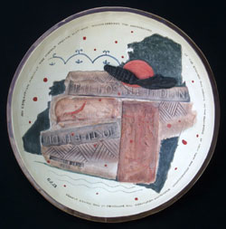
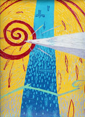

News & Accolades
A Great One Has Fallen... For John Mohawk, Who Adorned the Earth
Appointed to Speakership by NY Council for The Humanities
Sullivan/Clinton & Westward Expansion go statewide!
UN Delays Indigenous Rights Declaration
But the 30-year effort continues...
Next: A 10 Month Countdown
To the Indigenous Rights Redux...
Please Reach Out!
Donate for Katrina victims via NOLA grassroots org's
and ACORN

Speaking appearance at the Smithsonian National Museum of the American Indian (NY) -- NATIVE RESPONSE TO HISTORY | The Sullivan - Clinton Campaign: Then and Now. Historian Robert Spiegelman and G. Peter Jemison (Seneca), Director of Ganondagan, NYS Historic Site, re-examine the Sullivan- Clinton Campaign. (Click image for more...)
Exhibit @ the American Indian Community House (NY) -- AICH
Winner of the Sullivan/Clinton Essay Competition! -- CVHS
Welcome to the "Website of the Month"! -- HNN & On This Date...
***
Events 2006
COMING JUNE 3: Visit Our Great NYC Conference Panel!
Link:
It's Panel #703: "Fresh Approaches to the Iroquois Experience," a multi-media feast with P. Jemison, A. Michelson & D. George-Kanentiio. Sat. June 3 - 10am-12:15 at The Conference on NYS History, Columbia U., NYCCOMING AUG 26-27: Register for "Sullivan's March" Bus Tour!
We lecture during the unique annual tour of Pennsylvania's half of the saga.
Link:
http://www.canterburyts.com/warriorroad.htmCOMING Sat., Oct. 7: Presenting "Sullivan-Clinton & Empire"
Place:
Rensselaerville NY
Time:
(tba)
Link:
http://www.iroquoismuseum.org/iroq%20conf.htmCOMING Oct. 17: Presenting "Sullivan-Clinton Campaign: Then & Now"
Place:
the Finding Common Ground Teach-In,
Syracuse U/ ESF
Time:
3:20-4:20pm
Link:
http://www.peacecouncil.net/NOON/commonfuture/teachin_flier.docCOMING Sat., Oct. 21: Workshop on "Multimedia Approaches to Iroquois Themes"
Place:
the Annual NYS Outdoor Educator's Conference
in N. Java NY
Time:
1-4:15pm
Link:
http://www.nysoea.org/conference.htmCOMING Fri., Oct. 27: Presenting "New York's Missing Link: The Sullivan-Clinton Campaign"
Place:
the Mid-Atlantic Popular/American Culture Association Conference
in Baltimore
Time:
Session 5.3 @ 3-4:15pm
Link:
http://www.mapacagazette.netComing Nov. 16-17: Presenting "Sullivan-Clinton and the Environment"
Place:
the Annual Researching New York Conference,
SUNY Albany
Time:
(tba)
Link:
http://nystatehistory.org/researchny/rsny.htmlEvents 2005
Upcoming Lecture at the Fenimore Museum, Cooperstown

On Friday, October 14, Dr. Spiegelman presents an evening on the Sullivan-Clinton Campaign of 1779
Link:
First Annual Event!
Back on the Radar! New York's Seminal Historic Event!
"WHERE SULLIVAN-CLINTON MEETS IROQUOIA"
PANELS, PRESENTATIONS & DISCUSSION
by
SCHOLARS / ARTISTS / AUTHORS / CITIZENS
SUN., OCTOBER 9
12 Noon - 4 PM
ITHACA COLLEGE
Textor Building / Room 103
ITHACA, NY
Admission Free
Click here for Driving Directions
Expected participants will include:
- Dr. Robert Spiegelman, Founder of Sullivanclinton.com, co-host
- Dr. Jack Rossen, Ithaca College, co-host
- Birdie Hill (Cayuga), Heron Clan Mother
- Michael Acquilano, Staten Island Academy, Historian
- Dr. Geri Reisinger, Seneca, Southern Door Project, Kingston/Wilkes-Barre
- Kenn Anderson, Sr., Tour Developer, Historian
- Dr. E. James Radin, Sullivan/Clinton Re-Enactor, Historian
- Julie Cresswell, Independent Researcher
- Prof. Philip Arnold, Prof. Religious Studies, Syracuse
- Tom Huff (Cayuga), Sculptor/Artist
- Prof. James Thomas Stevens (Mohawk), Native American Studies, SUNY Freedonia
- Prof. Brook Olson, SHARE Farm
- Glenn Wright, Acquisitions Editor, Syracuse University Press
Others are soon to be announced
A Great Kindred Event!

Attend the Opening of the 5th Contemporary Iroquois Art Biennial
"THE SULLIVAN-CLINTON CAMPAIGN FROM THE IROQUOIS PERSPECTIVE"
Exhibit Date:
October 8 through December 31, 2005
Place:
The Fenimore Art Museum
Cooperstown, New York
Link:
Watch This Page For More Details.
All content © 2004 - 2020 Bob Spiegelman